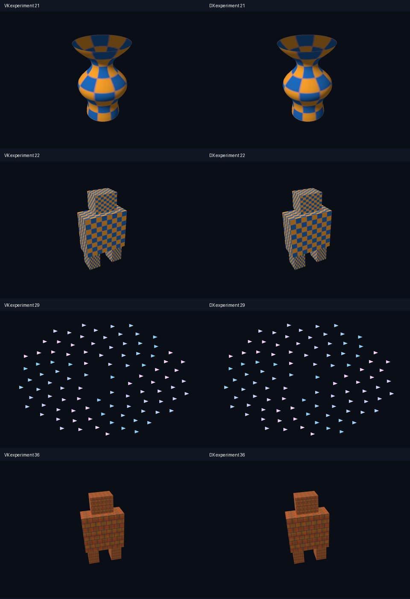
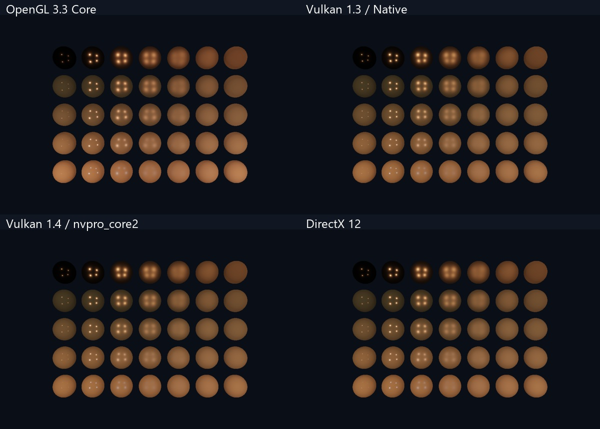

验证记录
当前 54 课扩展（2026-11-04）
共 148/148。两条新主线各有 54 章教材和 54 个独立程序；实验类型区分查询、计算与图形。完整日志位于本机构建目录，统计见 validation-results.json。Vulkan 粒子/顶点裁剪空间对齐后另行通过受影响的两个检查。
静态模型、glTF 节点、粒子和背面剔除在本机固定输入下做了双后端逐通道读回对照；综合场景包含图片、mip、轨道相机和 4x MSAA。对照数据见 readback-comparison.json，方法见 实验协议。这不等于跨 GPU 保证或性能排名。

已生成 308 对教材 Markdown/离线 HTML，文档检查覆盖所有本地链接、图片和脚本、148 个实验说明、54+54 主线目录以及源码定位。浏览器实测 54+54 章、148 个可用入口、离线/窄屏阅读，并从教材实际启动两条路线的 GPU mip 实验。图形 smoke 验证非空输出，数值实验逐项验证数据；二者不混用。双槽计算实验实际处理八次提交，窗口 renderer 仍按帧等待。
本轮使用 Windows x64 / MSVC 19.44 / Windows SDK 10.0.26100 / CMake 4.2.1 / RTX 3060。Release、其他 GPU、Linux、长期交互和所有 resize 组合未逐项验收。完整 glTF 材质/skin、IBL/SSAO 和完整多帧呈现仍按功能矩阵标记范围。
以前的阶段记录
以下保留先前 60 课版本的验证历史，作为演进记录；当前通过数量以上表为准。
日期：2026-11-04。最终本机工程目录：E:\GraphicsAPI-Tutorials。
共 60/60 通过。数据在 validation-results.json。原生 Vulkan、NV Context 和 DX12 三个 compute 例子分别逐项验证 256 个 i*i+1；图形课读回像素并检查动态范围。设备课和清屏课按其目标单独判断，未将无窗口的设备/计算示例伪装成可见场景。
实测环境
Windows x64，Visual Studio 2022 / MSVC 19.44，Windows SDK 10.0.26100，CMake 4.2.1，RTX 3060 / NVIDIA 610.88。OpenGL 3.3 Core，原生 Vulkan 请求 1.3；NV 请求 1.4。系统 SDK 工具 1.4.335，NV 使用项目固定的 1.4.341 headers/utility headers 和子模块 Volk。DX12 的 debug layer 已实际启用。
Vulkan 的 API 验证错误计数为零。当前系统有外部 overlay manifest 的 loader 诊断，课程会单独报告；未修改系统注册表或关闭其他软件。诊断与应用 VUID 错误区分处理，不因此宣称所有系统层都无诊断。
图像核查

已对三角形、纹理/深度、直接光 PBR 等 GPU 读回画面进行查看。各新课末尾提供截图。OpenGL 原有 11 组开关对比是先前扩充版的验证记录，本次合集复验为 34 个 smoke；没有把历史对比重复计入本次 60 个结果。
复验
从仓库根目录执行 powershell -ExecutionPolicy Bypass -File .\scripts\build.ps1 -Track all -Test。逐路线可用 ctest --preset <路线>-debug。原始本机日志在各 build/Testing/Temporary/LastTest.log，构建目录、日志、备份和本机缓存不上传 Git。
干净克隆检查
另外从本地 Git 仓库重新 clone --recurse-submodules，确认 nvpro_core2 子模块按固定提交检出；通过 prepare-dependencies.ps1 -Track vulkan-native 下载 GLFW/GLM 并校验 SHA256，然后配置、编译并运行 vk03_triangle，CTest 1/1 通过。此检查验证了源码缓存预下载路径；未将一次三角形检查描述为新克隆的全部 60 课复验。
源码排版与注释复验
2026-11-04 对教程自有 C++、GLSL/HLSL 和 CMake 进行统一排版，并补充中文关键注释。125 个源码/构建文件的格式检查通过；119 个 C++/着色器文件在忽略注释、空白及等价的相邻字符串拼接后，非注释 token 序列保持一致。
重新构建四条路线，Debug CTest 再次通过 OpenGL 34/34、原生 Vulkan 10/10、nvpro_core2 6/6、DX12 10/10，共 60/60。启动器另在独立构建目录编译通过，避免覆盖正在运行的阅读器。第三方依赖与 nvpro_core2 子模块没有改写。规则与维护命令见 源码排版说明。
详细精讲与对照阅读器验证
2026-11-04 增加 16 个主题精讲、60 课的深入说明/源码切片/预测实验、功能矩阵、版本参考与统一实验协议。生成 108 对 Markdown/离线 HTML，所有本地文档链接和图片/脚本资源通过完整性检查；重复生成会核对实际源码定位并更新切片。
浏览器实测主题切换、四路线源码筛选、搜索、窄屏布局和直接 file 方式离线阅读；通过新的对照页实际启动 vk08、nv05、dx08，三者均完成并读到全部 256 项计算校验结果。C++、着色器和 CMake 执行实现未在本轮修改，未把页面验证重算为一次新的 60 课 GPU 复验；先前的 60/60 记录保留。
范围
本次完成 Windows Debug 的真实 GPU 验证。Release 配置和打包流程已提供，但没有将其描述为全部运行验证；Linux、WARP、所有窗口交互组合、长期运行与多 GPU 未在本次逐项测试。CI 目前验证 Windows 编译，不执行硬件 GPU 测试，也不代替本机验证。Vulkan/DX12 的高级效果迁移范围和串行同步取舍见路线 README。